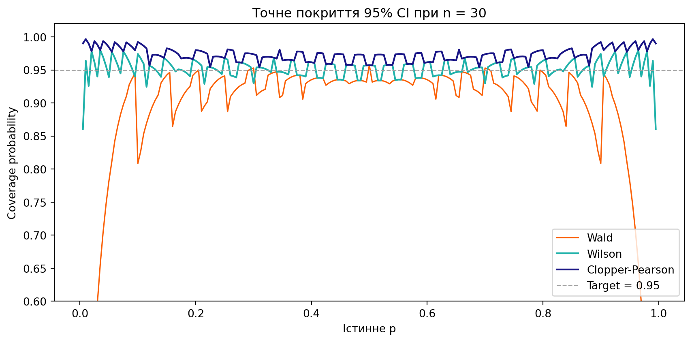
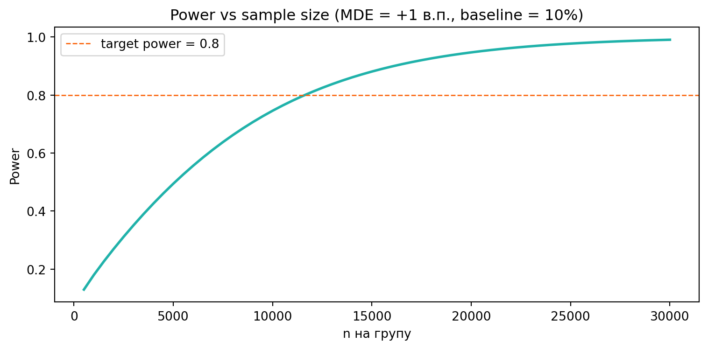

Будуємо власний proportions_ztest для A/B-експерименту
Автор
Приналежність
Ihor Miroshnychenko
Kyiv School of Economics
Дата публікації
May 27, 2026
Що ми робимо сьогодні
На лекції ми по черзі побудували Z-тест: нормальний розподіл, ЦГТ, Z-статистику, continuity correction і нарешті — двовибірковий Z-тест для пропорцій з довірчим інтервалом. Сьогодні збираємо все в один інструмент — власну функцію my_z_test(), а потім її «двовибіркового близнюка» my_two_sample_z_test(), схожого за духом на statsmodels.stats.proportion.proportions_ztest.
ПриміткаПравила гри
Не використовуємо готовий proportions_ztest — пишемо все самі через scipy.stats.norm (norm.cdf, norm.ppf).
Кожна версія — це маленьке розширення попередньої.
Кожен фінальний крок (Final, повний цикл) перевикористовує попередні функції, а не дублює їх.
Після кожної версії — блок «Ваша черга» з мінізадачею.
1 Кейс: застосунок доставки їжі GreenBowl
Працюємо над GreenBowl — застосунком доставки здорової їжі. Продуктова команда додала на головному екрані кнопку «1-click reorder» — повторити попереднє замовлення в один тап. Перш ніж розкочувати фічу на всю аудиторію, треба переконатись, що вона дійсно піднімає метрику повторних замовлень.
Одиниця спостереження: один користувач після першого замовлення.
Метрика успіху: користувач зробив ще одне замовлення впродовж 7 днів
Базовий рівень:\(\mu_0 = 0{,}10\) (3 місяці історичних даних).
Бізнес-MDE: ефект < +1 в.п. не вартий ресурсів на впровадження.
Напрям: нас цікавить лише ефект «вгору» → однобічний тест.
Рівень значущості:\(\alpha = 0{,}05\).
ПриміткаЧому Z-тест, а не точний біномний?
Аудиторія GreenBowl — сотні тисяч користувачів. На таких розмірах вибірки нормальна апроксимація дуже точна, а Z-тест на порядки швидший за точний біномний на вибірках \(n > 10^4\). Це і є той «масштаб», заради якого існує Z-тест.
2 Версія 1 — Z-статистика і p-value
Найпростіша версія: дано \(n\), \(\mu_0\) і кількість успіхів \(q\). Повертаємо однобічний \(p\)-value для \(H_1: \mu > \mu_0\) за нормальною апроксимацією.
\(p < 0{,}05\) — є докази на користь \(H_1\). Конверсія 11.3% статистично вища за історичні 10%. Але не поспішаймо «шипати» — ефект може бути на межі бізнес-значущості. Далі додамо CI, щоб побачити розмір.
ПорадаВаша черга 1
Перевірте \(q \in \{200, 210, 220, 230, 240\}\) при \(n=2000\), \(\mu_0=0{,}10\). Знайдіть найменше \(q\), при якому \(p \leq 0{,}05\) — це і є критичне значення тесту.
Переведіть критичний \(q\) у конверсію та у lift над \(\mu_0\). Скільки відсоткових пунктів додатково мусить «спіймати» команда, щоб тест назвав результат значущим?
Дослідницьке. Подвоїть тричі \(n\): 2000 → 8000. У скільки разів зменшується критичний lift — удвічі чи в \(\sqrt{4}=2\)? Чому саме так?
ПриміткаРозв’язання 1
qs = np.arange(200, 245, 5)for q in qs: p = my_z_test(q, n=2000, mu0=0.10) flag ="✓ REJECT"if p <=0.05else" "print(f"q={q:>3d} → p={p:.4f}{flag}")q_crit_2k =next(q for q inrange(200, 260) if my_z_test(q, 2000, 0.10) <=0.05)q_crit_8k =next(q for q inrange(700, 1000) if my_z_test(q, 8000, 0.10) <=0.05)lift_2k = (q_crit_2k/2000-0.10) *100lift_8k = (q_crit_8k/8000-0.10) *100print(f"\nКритичні значення:")print(f" n=2000: q_min = {q_crit_2k} → lift = {lift_2k:+.2f} в.п.")print(f" n=8000: q_min = {q_crit_8k} → lift = {lift_8k:+.2f} в.п.")print(f" Відношення lift_2k / lift_8k = {lift_2k/lift_8k:.2f}")
Інтерпретація. Критичний lift масштабується як \(1/\sqrt{n}\), бо \(SE \propto 1/\sqrt{n}\). Тому при збільшенні \(n\) у 4 рази критичний lift зменшується у 2 рази, а не в 4. Це і є фундаментальний компроміс A/B-тестів: щоб задетектити вдвічі менший ефект, потрібно вчетверо більше користувачів.
3 Версія 2 — три варіанти альтернативи
Антифрод-команда хоче перевіряти падіння метрики (одне-бічний less), продакт-команда іноді хоче «чи щось взагалі змінилось» (двобічний). Додаємо параметр alternative.
def my_z_test(q, n, mu0=0.5, alternative="greater"):""" Версія 2. Додає параметр `alternative`. alternative : {"greater", "less", "two-sided"} """ p_hat = q / n se = np.sqrt(mu0 * (1- mu0) / n) z = (p_hat - mu0) / seif alternative =="greater":return1- norm.cdf(z)if alternative =="less":return norm.cdf(z)if alternative =="two-sided":return2* (1- norm.cdf(abs(z)))raiseValueError(f"Невідома альтернатива: {alternative!r}")
for alt in ("greater", "less", "two-sided"): p = my_z_test(q=226, n=2000, mu0=0.10, alternative=alt)print(f"alternative={alt:>10s} → p-value = {p:.4f}")
Зверніть увагу: для тих самих даних однобічний \(p\)-value дорівнює половині двобічного — бо нормальний розподіл симетричний. Це не співпадіння, а наслідок формули \(2 \cdot (1 - \Phi(|z|))\).
ПопередженняКоли двобічний обов’язковий
Якщо продукт має реальний ризик нашкодити (наприклад, новий пейволл, який може як підняти, так і обвалити конверсію) — беремо двобічний. У кейсі GreenBowl ризик однобічний: погану кнопку ми просто не випустимо.
ПорадаВаша черга 2
На вибірці \(q=226\), \(n=2000\), \(\mu_0=0{,}10\) переконайтесь, що p_two_sided == 2 · p_greaterточно.
А тепер «погані новини». Візьміть \(q=174\) (тобто \(\hat p < \mu_0\)). Чи зберігається ця рівність? Спробуйте 2 · p_less — що виходить?
Виведіть загальну формулу: при якому співвідношенні \(\hat p\) та \(\mu_0\) маємо \(p_{\text{two}} = 2\,p_{\text{greater}}\), а коли — \(2\,p_{\text{less}}\)?
Загальна формула:\(p_{\text{two-sided}} = 2 \cdot \min(p_{\text{greater}},\ p_{\text{less}})\). Тобто беремо завжди той хвіст, у якому спостереження «більш екстремальне». Коли \(\hat p > \mu_0\) (\(z>0\)) — більш екстремальний правий хвіст, тому \(p_{\text{two}} = 2 \cdot p_{\text{greater}}\). Коли \(\hat p < \mu_0\) (\(z<0\)) — лівий, тому \(p_{\text{two}} = 2 \cdot p_{\text{less}}\).
Чому в Z строго, а в біномному — наближено? Бо нормальний розподіл симетричний навколо нуля: \(P(Z > z) = P(Z < -z)\). Біномний при \(\mu_0 \ne 0{,}5\) — асиметричний, тому ймовірності у двох хвостах не дорівнюють одна одній, і подвоєння одного хвоста дає лише приблизне \(p_{\text{two}}\).
4 Версія 3 — continuity correction
Для маленьких \(n\) Z-тест систематично занижує \(p\)-value відносно точного біномного. На лекції ми «допилили» це зсувом нормальної на \(-0{,}5\). Додаємо прапор use_cc.
def my_z_test(q, n, mu0=0.5, alternative="greater", use_cc=False):""" Версія 3. Додає continuity correction (рекомендується при n < ~100). """ p_hat = q / nif use_cc:# Зсуваємо спостережене на 0.5/n у бік mu0 — це і є коректуванняif alternative =="greater": p_hat = (q -0.5) / nelif alternative =="less": p_hat = (q +0.5) / nelse:# two-sided: зсуваємо в бік mu0 p_hat = (q -0.5) / n if p_hat >= mu0 else (q +0.5) / n se = np.sqrt(mu0 * (1- mu0) / n) z = (p_hat - mu0) / seif alternative =="greater":return1- norm.cdf(z)if alternative =="less":return norm.cdf(z)if alternative =="two-sided":return2* (1- norm.cdf(abs(z)))raiseValueError(f"Невідома альтернатива: {alternative!r}")
Сценарій A. MVP-запуск на \(n=30\) бета-тестерах, \(q=19\) (приклад з лекції):
p_naive_small = my_z_test(q=19, n=30, mu0=0.5, use_cc=False)p_cc_small = my_z_test(q=19, n=30, mu0=0.5, use_cc=True)p_exact_small =1- binom.cdf(19-1, 30, 0.5)print("MVP-запуск, n=30:")print(f" Z-тест без correction: p = {p_naive_small:.4f}")print(f" Z-тест з correction: p = {p_cc_small:.4f}")print(f" Точний біномний: p = {p_exact_small:.4f}")
MVP-запуск, n=30:
Z-тест без correction: p = 0.0721
Z-тест з correction: p = 0.1006
Точний біномний: p = 0.1002
Корекція суттєво наближає Z-тест до точного результату — \(p\)-value збільшується з 0.07 до 0.10. У цьому сценарії висновок при \(\alpha = 0{,}05\) не змінюється — усі три тести «не відхиляємо \(H_0\)». Але корекція не завжди — лише косметика.
Сценарій A.2 — коли correction рятує від хибно-позитивного рішення. Зменшимо вибірку до \(n=20\), \(q=14\), \(\mu_0 = 0{,}5\) (бета-аудиторія, де історичний baseline — 50%):
n_d, q_d =20, 14p_naive_d = my_z_test(q=q_d, n=n_d, mu0=0.5, use_cc=False)p_cc_d = my_z_test(q=q_d, n=n_d, mu0=0.5, use_cc=True)p_exact_d =1- binom.cdf(q_d -1, n_d, 0.5)def decision(p, alpha=0.05):return"REJECT H0"if p <= alpha else"не відхиляємо"print(f"Бета-запуск, n=20, q=14, alpha=0.05:")print(f" Z-тест без correction: p = {p_naive_d:.4f} → {decision(p_naive_d)}")print(f" Z-тест з correction: p = {p_cc_d:.4f} → {decision(p_cc_d)}")print(f" Точний біномний: p = {p_exact_d:.4f} → {decision(p_exact_d)}")
Бета-запуск, n=20, q=14, alpha=0.05:
Z-тест без correction: p = 0.0368 → REJECT H0
Z-тест з correction: p = 0.0588 → не відхиляємо
Точний біномний: p = 0.0577 → не відхиляємо
ПопередженняЩо щойно сталося
Точний біномний:\(p \approx 0{,}058\) → не відхиляємо \(H_0\). Доказів недостатньо.
Z-тест з correction:\(p \approx 0{,}058\) → не відхиляємо. Знов узгоджено з еталоном.
На малих \(n\) нормальна апроксимація систематично занижує\(p\)-value у хвостах. Без correction ви будете «знаходити» ефекти там, де їх немає, — і шипати фічі на основі шуму. Continuity correction повертає рішення в безпечну зону.
Сценарій B. Запуск на повній GreenBowl-аудиторії, \(n=2000\), \(q=226\):
p_naive_big = my_z_test(q=226, n=2000, mu0=0.10, use_cc=False)p_cc_big = my_z_test(q=226, n=2000, mu0=0.10, use_cc=True)print("GreenBowl-масштаб, n=2000:")print(f" Z-тест без correction: p = {p_naive_big:.6f}")print(f" Z-тест з correction: p = {p_cc_big:.6f}")print(f" Різниця: {abs(p_naive_big - p_cc_big):.6f}")
GreenBowl-масштаб, n=2000:
Z-тест без correction: p = 0.026316
Z-тест з correction: p = 0.028673
Різниця: 0.002357
ПриміткаВисновок
Continuity correction — це «милиця» для малих вибірок. На GreenBowl-масштабі різниця проявляється в 5-6-му знаку і на жодне бізнес-рішення не впливає. Саме тому для великих \(n\) ми спокійно використовуємо Z-тест без корекції, а на MVP-етапі (десятки користувачів) переходимо або на correction, або одразу на точний біномний.
ПорадаВаша черга 3
Для \(\mu_0 = 0{,}5\) знайдіть мінімальне \(n\), при якому \(|p_{\text{naive}} - p_{\text{cc}}| < 0{,}001\) (беріть \(q\) близько α-кордону, наприклад \(q \approx \mu_0 n + 1{,}645\sqrt{n\mu_0(1-\mu_0)}\)).
Повторіть для \(\mu_0 = 0{,}10\) та \(\mu_0 = 0{,}01\). Чи це теж саме \(n\)?
Дослідницьке. Виведіть таблицю \(|p_{\text{naive}} - p_{\text{cc}}|\) для різних \(n\) і \(\mu_0\). Що краще описує «достатнє n» — чисте \(n\) чи очікувана кількість успіхів\(n\cdot\mu_0\)? Перевірте: чи виконується правило \(n\cdot\mu_0 \geq 30\) як універсальний кордон?
ПриміткаРозв’язання 3
def cc_diff(n, mu0):"""|Δp| при q на α-кордоні (z ≈ 1.645).""" q =int(round(mu0 * n +1.645* np.sqrt(n * mu0 * (1- mu0)))) p_naive = my_z_test(q, n, mu0, use_cc=False) p_cc = my_z_test(q, n, mu0, use_cc=True)returnabs(p_naive - p_cc)print(f"{'n':>6s}{'μ₀':>6s}{'n·μ₀':>6s}{'|Δp|':>8s}")for mu0 in (0.5, 0.10, 0.01):for n in (30, 100, 300, 1000, 3000, 10_000):if n * mu0 <1:continueprint(f"{n:>6d}{mu0:>6.2f}{n*mu0:>6.1f}{cc_diff(n, mu0):>8.4f}")print()
Інтерпретація. Дивіться по стовпчику n·μ₀ (очікувана кількість успіхів), а не по n:
\(n\cdot\mu_0 \approx 10\) дає \(|\Delta p| \approx 0{,}019\text{--}0{,}020\) і при \(n=100,\ \mu_0=0{,}1\), і при \(n=1000,\ \mu_0=0{,}01\). Раз у 10 більший \(n\), але та сама \(|\Delta p|\), бо ефективна вибірка та сама.
\(n\cdot\mu_0 \approx 100\) дає \(|\Delta p| \approx 0{,}005\text{--}0{,}006\) для всіх трьох \(\mu_0\).
Реальний кордон — це ефективна вибірка\(\min(n\mu_0,\ n(1-\mu_0))\), а не сам \(n\). Класичне правило \(n\mu_0 \geq 30\) якраз і фіксує цей момент: correction перестає бути потрібною, коли в кожному «класі» (успіх/неуспіх) набирається достатньо спостережень для гладкої апроксимації.
5 Версія 4 — довірчий інтервал для \(\mu\)
Замість «так/ні» бізнес хоче діапазон для реальної конверсії. Найпростіший CI — Вальдівський:
def my_z_test(q, n, mu0=0.5, alternative="greater", use_cc=False, alpha=0.05, conf_int=False):""" Версія 4. Додає conf_int=True → повертає dict з p-value і CI. Тип CI узгоджується з alternative: two-sided → [p̂ - z₁₋α/₂·SE, p̂ + z₁₋α/₂·SE] greater → одностороння нижня межа: [p̂ - z₁₋α·SE, 1] less → одностороння верхня межа: [0, p̂ + z₁₋α·SE] """ p_hat_raw = q / n p_hat = p_hat_rawif use_cc:if alternative =="greater": p_hat = (q -0.5) / nelif alternative =="less": p_hat = (q +0.5) / nelse: p_hat = (q -0.5) / n if p_hat_raw >= mu0 else (q +0.5) / n se_null = np.sqrt(mu0 * (1- mu0) / n) z = (p_hat - mu0) / se_nullif alternative =="greater": p_value =1- norm.cdf(z)elif alternative =="less": p_value = norm.cdf(z)elif alternative =="two-sided": p_value =2* (1- norm.cdf(abs(z)))else:raiseValueError(f"Невідома альтернатива: {alternative!r}")ifnot conf_int:return p_value# Wald-CI використовує SE з p_hat_raw (а не mu0!). se_emp = np.sqrt(p_hat_raw * (1- p_hat_raw) / n)if alternative =="two-sided": z_crit = norm.ppf(1- alpha /2) ci_low = p_hat_raw - z_crit * se_emp ci_high = p_hat_raw + z_crit * se_empelif alternative =="greater": z_crit = norm.ppf(1- alpha) ci_low = p_hat_raw - z_crit * se_emp ci_high =1.0else: # less z_crit = norm.ppf(1- alpha) ci_low =0.0 ci_high = p_hat_raw + z_crit * se_empreturn {"p_value": p_value, "ci_low": ci_low, "ci_high": ci_high}
ВажливоТонкий момент: SE для тесту і SE для CI — різні
Для тесту беремо \(\sqrt{\mu_0(1-\mu_0)/n}\) (припускаємо H₀). Для CI беремо \(\sqrt{\hat{p}(1-\hat{p})/n}\) (описуємо спостережене, без припущень). Це та сама логіка pooled vs unpooled, яка з’явиться у двовибірковому тесті.
ПриміткаКоли Wald CI ламається
Wald-інтервал може виходити за межі \([0, 1]\) при крайніх \(\hat p\) (наприклад, \(\hat p = 0{,}02\) на \(n=50\)). Для \(p \lesssim 5\%\) або \(p \gtrsim 95\%\) беріть Wilson або Clopper-Pearson: statsmodels.stats.proportion.proportion_confint(q, n, method="wilson").
ВажливоДвосторонній vs односторонній CI
CI має узгоджуватися з тестом — той самий бюджет помилки I роду:
two-sided → класичний \([\hat p - z_{1-\alpha/2}\cdot SE,\ \hat p + z_{1-\alpha/2}\cdot SE]\). Для \(\alpha = 0{,}05\) це \(z = 1{,}96\).
greater (H₁: \(\mu > \mu_0\)) → лише нижня межа: \([\hat p - z_{1-\alpha}\cdot SE,\ 1]\). Звучить як «\(\mu\)щонайменше\(L\) з рівнем впевненості \(1-\alpha\)».
less (H₁: \(\mu < \mu_0\)) → лише верхня межа: \([0,\ \hat p + z_{1-\alpha}\cdot SE]\). Звучить як «\(\mu\)щонайбільше\(U\)».
Чому це не «той самий CI, тільки з одною межею»? Бо \(z_{1-\alpha} < z_{1-\alpha/2}\) (\(1{,}645 < 1{,}96\) при \(\alpha=0{,}05\)): односторонній CI щільніший, але каже менше — ви відмовляєтеся від інформації про другу межу заради точнішої першої.
Двосторонній CI ≈ \([10{,}0\%,\ 12{,}7\%]\): ширший, але описує можливі відхилення в обидва боки. Корисно для звітності.
Одностороння нижня межа ≈ \(10{,}1\%\): тіснішa за ліву межу two-sided, бо весь \(\alpha\) йде в один хвіст. Питання, на яке вона відповідає: «наскільки погано в найгіршому випадку?» — і відповідь: \(\mu\) практично не нижче 10.1%, але не дотягує до бізнес-MDE 11%.
Рішення: статистично — так, бізнес-цінність — під сумнівом. Збираємо більше даних або погоджуємось на ризик «ефемерної» перемоги.
ПорадаВаша черга 4
Запустіть my_z_test(q=226, n=2000, mu0=0.10, alternative="less", alpha=0.05, conf_int=True). Як виглядає CI? Чи має він сенс для цих даних і чому?
Скільки додаткових повторних замовлень \(q\) потрібно (при тому самому \(n=2000\)), щоб одностороння нижня межа перетнула бізнес-поріг 11%?
Дослідницьке. При тому самому \(q=226\), як змінюється одностороння нижня межа при \(\alpha \in \{0{,}01,\ 0{,}05,\ 0{,}10\}\)? Чи може «менш консервативний» PM (вищa \(\alpha\)) виправдати рішення «шипати», якого «консервативний» не дозволяє?
ПриміткаРозв’язання 4
# (1) alternative="less" — CI з верхньою межею, але дані «тягнуть» у протилежний бікr = my_z_test(226, 2000, 0.10, alternative="less", alpha=0.05, conf_int=True)print(f"alt='less': p={r['p_value']:.4f}, CI = [{r['ci_low']:.4f}, {r['ci_high']:.4f}]")# (2) Шукаємо мінімальне q, при якому one-sided lower bound ≥ 0.11for q inrange(220, 280): lo = my_z_test(q, 2000, 0.10, "greater", alpha=0.05, conf_int=True)["ci_low"]if lo >=0.11:print(f"\nq_min = {q} (p̂ = {q/2000*100:.2f}%, lower bound = {lo:.4f})") extra = q -226print(f"Додатково потрібно: {extra} повторних замовлень понад спостережені 226")break# (3) Trade-off α — нижня межа при різних рівнях значущостіprint(f"\n{'α':>6s}{'lower':>8s}{'≥ MDE 11%?':>12s}")for alpha in (0.01, 0.05, 0.10): lo = my_z_test(226, 2000, 0.10, "greater", alpha=alpha, conf_int=True)["ci_low"] flag ="так"if lo >=0.11else"ні"print(f"{alpha:>6.2f}{lo:>8.4f}{flag:>12s}")
alt='less': p=0.9737, CI = [0.0000, 0.1246]
q_min = 245 (p̂ = 12.25%, lower bound = 0.1104)
Додатково потрібно: 19 повторних замовлень понад спостережені 226
α lower ≥ MDE 11%?
0.01 0.0965 ні
0.05 0.1014 ні
0.10 0.1039 ні
Інтерпретація.
CI = \([0,\ 0{,}124]\) при alt="less" — «\(\mu \leq 12{,}4\%\) з впевненістю 95%». Тривіально вірно (бо \(\hat p = 11{,}3\%\)), але не та інформація, на яку варто покладатись: дані тягнуть угору, а alternative дивиться вниз. Урок: альтернативу фіксують до перегляду даних, інакше можна задним числом «вибрати» зручний результат.
Потрібно ще приблизно 19 замовлень (q=245 замість 226), щоб lower bound «вилізла» на 11%.
Жоден із трьох \(\alpha\) не дозволяє стверджувати «\(\mu \geq 11\%\)» при цих даних — усі нижні межі нижче 11%. Тобто навіть «розслабляючи» \(\alpha\) до 0.10, ми не отримуємо бізнес-обґрунтування для шипання. Висновок: справжній сигнал — слабкий, і це не питання \(\alpha\), а питання даних.
ПриміткаПоглиблено: Wilson та Clopper-Pearson CI
Wald-інтервал базується на нормальній апроксимації й оцінює \(SE\) через спостережене \(\hat p\). Це його ламає у трьох ситуаціях:
Малі \(n\): сама апроксимація неточна.
Крайні \(\hat p\):\(SE = \sqrt{\hat p (1-\hat p)/n} \to 0\) при \(\hat p \to 0\) або \(\hat p \to 1\), тому CI «штучно» вузький.
\(\hat p = 0\) або \(\hat p = 1\): Wald CI вироджується в одну точку — «з впевненістю 95% ймовірність дорівнює нулю після 20 невдач».
Існують два класичних виправлення.
5.0.1 Wilson (1927) — інверсія тесту
Замість фіксування \(\hat p\) й обчислення \(SE\) Wilson інвертує сам тест: які \(p_0\) узгоджені з даними при \(\alpha\)?
\[\left|\hat p - p_0\right| \leq z_{1-\alpha/2}\sqrt{\dfrac{p_0(1-p_0)}{n}}.\]
Підносимо до квадрата — квадратне рівняння за \(p_0\). Його два корені й дають межі:
\[\text{CI}_{\text{Wilson}} = \dfrac{1}{1 + z^2/n}\left[\hat p + \dfrac{z^2}{2n} \pm z \sqrt{\dfrac{\hat p(1-\hat p)}{n} + \dfrac{z^2}{4n^2}}\right]\]
Центр інтервалу — \((\hat p + z^2/(2n))/(1 + z^2/n)\) — зсунутий у бік \(0{,}5\) (працює як слабкий байєсівський пріор). Інтервал завжди в \([0, 1]\).
5.0.2 Clopper-Pearson (1934) — точний
Не використовує жодних апроксимацій, бере межі прямо з біномного розподілу:
\(p_L\) — найменше \(p\), для якого \(P(X \geq q \mid p) \geq \alpha/2\).
\(p_U\) — найбільше \(p\), для якого \(P(X \leq q \mid p) \geq \alpha/2\).
Завдяки зв’язку Binomial↔︎Beta ці значення мають закриту форму через квантилі бета-розподілу \(B_q\):
\[p_L = B_{\alpha/2}(q,\ n - q + 1),\qquad p_U = B_{1-\alpha/2}(q + 1,\ n - q).\]
Крайні випадки: \(p_L = 0\) при \(q = 0\) і \(p_U = 1\) при \(q = n\). Покриття — гарантовано \(\geq 1 - \alpha\) (метод консервативний).
5.0.3 Реалізація і cross-check
from scipy.stats import beta as beta_distfrom statsmodels.stats.proportion import proportion_confintdef wald_ci(q, n, alpha=0.05): p_hat = q / n se = np.sqrt(p_hat * (1- p_hat) / n) z = norm.ppf(1- alpha/2)return (p_hat - z*se, p_hat + z*se)def wilson_ci(q, n, alpha=0.05): p_hat = q / n z = norm.ppf(1- alpha/2) denom =1+ z**2/ n center = (p_hat + z**2/ (2*n)) / denom half_width = z / denom * np.sqrt(p_hat*(1-p_hat)/n + z**2/(4*n**2))return (center - half_width, center + half_width)def clopper_pearson_ci(q, n, alpha=0.05): lower =0.0if q ==0else beta_dist.ppf(alpha/2, q, n - q +1) upper =1.0if q == n else beta_dist.ppf(1- alpha/2, q +1, n - q)return (lower, upper)# Cross-check: те саме через statsmodels (q=5, n=50)print(f"{'метод':<18s}{'моя реалізація':>26s}{'statsmodels':>26s}")for name, fn, sm_method in [ ("Wald", wald_ci, "normal"), ("Wilson", wilson_ci, "wilson"), ("Clopper-Pearson", clopper_pearson_ci, "beta"),]: mine = fn(5, 50) sm = proportion_confint(5, 50, method=sm_method)print(f"{name:<18s} [{mine[0]:+.4f}, {mine[1]:+.4f}] [{sm[0]:+.4f}, {sm[1]:+.4f}]")
метод моя реалізація statsmodels
Wald [+0.0168, +0.1832] [+0.0168, +0.1832]
Wilson [+0.0435, +0.2136] [+0.0435, +0.2136]
Clopper-Pearson [+0.0333, +0.2181] [+0.0333, +0.2181]
5.0.4 Числове порівняння на «незручних» випадках
scenarios = [ (50, 2, "малий n, малий p̂"), (20, 0, "екстрим: q = 0"), (20, 20, "екстрим: q = n"), (200, 4, "low-conversion (p̂ = 2%)"), (200, 100, "помірний випадок (p̂ = 0.5)"),]for n, q, label in scenarios:print(f"\nn={n}, q={q} — {label} (p̂={q/n:.3f}):")for name, fn in [("Wald", wald_ci), ("Wilson", wilson_ci), ("Clopper-Pearson", clopper_pearson_ci)]: lo, hi = fn(q, n) warn =" ← поза [0,1]!"if lo <0or hi >1else"" deg =" ← вироджений!"ifabs(hi - lo) <1e-10else""print(f" {name:<18s} [{lo:+.4f}, {hi:+.4f}]{warn}{deg}")
Найважливіша властивість CI — наскільки часто він реально покриває істинне \(p\). Для біномного розподілу її можна порахувати точно (без симуляції), переглянувши всі \(n+1\) можливих \(q\):
def exact_coverage(n, p_true, method, alpha=0.05): cov =0.0for q inrange(n +1): lo, hi = method(q, n, alpha)if lo <= p_true <= hi: cov += binom.pmf(q, n, p_true)return covn_demo =30p_grid = np.linspace(0.005, 0.995, 199)cov_w = [exact_coverage(n_demo, p, wald_ci) for p in p_grid]cov_wi = [exact_coverage(n_demo, p, wilson_ci) for p in p_grid]cov_cp = [exact_coverage(n_demo, p, clopper_pearson_ci) for p in p_grid]fig, ax = plt.subplots(figsize=(9, 4.5))ax.plot(p_grid, cov_w, color=red, lw=1.2, label="Wald")ax.plot(p_grid, cov_wi, color=turquoise, lw=1.6, label="Wilson")ax.plot(p_grid, cov_cp, color=blue, lw=1.6, label="Clopper-Pearson")ax.axhline(0.95, color=gray, linestyle="--", lw=1, label="Target = 0.95")ax.set_xlabel("Істинне p")ax.set_ylabel("Coverage probability")ax.set_title(f"Точне покриття 95% CI при n = {n_demo}")ax.set_ylim(0.60, 1.02)ax.legend(loc="lower right")plt.tight_layout()plt.show()

На графіку «зубчастість» — це не симуляційний шум, а дискретність біномного розподілу: при переході через \(q\), що додає/виключає точку з CI, покриття стрибає.
5.0.6 Висновки
Wald
Wilson
Clopper-Pearson
Завжди в \([0, 1]\)
ні
так
так
Покриття при крайніх \(p\)
часто 70-90%
\(\approx 95\%\)
\(\geq 95\%\)
Виродження при \(q=0\) або \(q=n\)
так
ні
ні
Ширина при середніх \(p\)
найвужча
помірна
найширша
Складність формули
проста
алгебраїчна
через бета-квантиль
Практичні рекомендації:
Дефолт для пропорцій — Wilson. Працює добре на всьому діапазоні \(p\), без сюрпризів.
Wald — лише при \(n \cdot \hat p \geq 30\)і\(n \cdot (1 - \hat p) \geq 30\), або як «прикидка на серветці». У навчальній меті Wald цінний тим, що його формула прозоро показує роль \(SE\) — але в продакшні беріть Wilson.
Brown, Cai, DasGupta (Statistical Science, 2001): для пропорцій Wald поступається Wilson практично завжди й рекомендується відмовитись від Wald як від дефолту в навчанні та практиці.
Від однієї вибірки до двох
my_z_test працює коли є фіксований baseline — наприклад, моніторинг SLA («чи конверсія в продакшні \(\geq 10\%\) за тиждень?») або порівняння поточного тижня з історією. Але чесний A/B-тест запускає дві когорти одночасно — і обидві мають шум.
Створюємо паралельну функцію my_two_sample_z_test. Стара функція не зникає — вона залишається для baseline-сценаріїв: SLA-моніторинг, regression detection, sanity-перевірки історичних метрик.
6 Версія 5 — двовибірковий Z-тест
Замість фіксованого \(\mu_0\) використовуємо pooled оцінку:
Двосторонній CI для lift ≈ \([+0{,}06,\ +3{,}94]\) в.п. Нижня межа — лише +0.06 в.п., значно нижча за бізнес-MDE +1 в.п.
Одностороння нижня межа для lift ≈ \(+0{,}37\) в.п. — тіснішa (бо весь \(\alpha\) йде в один хвіст), але усе одно нижче +1 в.п.
PM-дилема: статистично є, але бізнес-значущість невпевнена в обох інтерпретаціях. Істинний lift може виявитися 0.4 в.п., що не вартий деплою. Рішення: або зібрати більше даних, або погодитись на ризик «ефемерної» перемоги.
ПриміткаЯкий CI використовувати в A/B-звіті
Якщо тест односторонній (продукт відповідає на запитання «краще чи ні?») — одностороння нижня межа для lift семантично узгоджена з тестом і відповідає на «який lift гарантовано перевищено».
Якщо тест двосторонній («змінилось взагалі?») — беріть двосторонній CI.
Не змішуйте: двосторонній CI на одностороннє рішення «з’їдає» \(\alpha/2\) даремно.
6.2 Cross-check з індустріальним стандартом
from statsmodels.stats.proportion import proportions_ztest# statsmodels конвенція: alternative="smaller" → H1: p1 < p2 (наш "less")z_sm, p_sm = proportions_ztest([x1, x2], [n1, n2], alternative="smaller")print(f"statsmodels: Z = {z_sm:.4f}, p = {p_sm:.4f}")print(f"мій код: Z = {res_one['z_stat']:.4f}, p = {res_one['p_value']:.4f}")
statsmodels: Z = -2.0213, p = 0.0216
мій код: Z = -2.0213, p = 0.0216
Числа збігаються до 4-го знака — наша реалізація коректна.
6.3 Unbalanced groups (90/10 split)
У продакшні часто запускають нову фічу на меншому відсотку трафіку для безпеки. Перевіряємо: функція має працювати і для нерівних \(n_1, n_2\).
# Беремо two-sided для коректного порівняння ширини CI.def ci_width_pp(x1, n1, x2, n2, alpha=0.05): r = my_two_sample_z_test(x1, n1, x2, n2, alternative="two-sided", alpha=alpha, conf_int=True)return (r["ci_high"] - r["ci_low"]) *100# у відсоткових пунктах# Unbalanced 90/10, разом 20 000x1_u, n1_u =1820, 18_000x2_u, n2_u =243, 2_000w_unbal = ci_width_pp(x1_u, n1_u, x2_u, n2_u)# Балансоване 50/50, разом 4 000 (наш базовий A/B з демо)w_bal_small = ci_width_pp(200, 2_000, 240, 2_000)# Балансоване 50/50, разом 20 000 (та сама загальна вибірка, що й unbalanced)w_bal_big = ci_width_pp(1000, 10_000, 1200, 10_000)print(f"Unbalanced 90/10, разом 20 000: CI width = {w_unbal:.2f} в.п.")print(f"Balanced 50/50, разом 4 000: CI width = {w_bal_small:.2f} в.п.")print(f"Balanced 50/50, разом 20 000: CI width = {w_bal_big:.2f} в.п.")
Unbalanced 90/10, разом 20 000: CI width = 3.00 в.п.
Balanced 50/50, разом 4 000: CI width = 3.88 в.п.
Balanced 50/50, разом 20 000: CI width = 1.73 в.п.
ПриміткаЧому unbalanced — це дорожче
Та сама загальна вибірка (\(20\,000\)) при unbalanced 90/10 дає ширший CI, ніж balanced 50/50. Причина: точність визначається меншою групою — 2 000 користувачів проти 10 000. Тобто 18 000 «зекономлених» на контролі користувачів майже не покращують оцінку lift. Для тієї самої точності unbalanced-дизайн потребує суттєво більше користувачів сумарно.
ПорадаВаша черга 5
При сумарній вибірці 20 000 порівняйте \(50/50,\ 70/30,\ 90/10\) за шириною CI. Чи виграє 50/50?
Дослідницьке. А якщо дисперсії в групах сильно різні? Розгляньте \(p_1=0{,}05,\ p_2=0{,}50\) (екзотично, але буває в експериментах на специфічних сегментах). Перевірте splits \(30/70,\ 40/60,\ 50/50,\ 60/40,\ 70/30\). Який тепер дає найвужчий CI?
Перевірте: чи збігається ваш оптимальний split з формулою Neyman — \(n_1/N = \sigma_1 / (\sigma_1 + \sigma_2)\), де \(\sigma_i = \sqrt{p_i(1-p_i)}\)?
ПриміткаРозв’язання 5
N_total =20_000def width_pp(x1, n1, x2, n2): r = my_two_sample_z_test(x1, n1, x2, n2, "two-sided", 0.05, conf_int=True)return (r["ci_high"] - r["ci_low"]) *100print("Однакові дисперсії: p1=0.10, p2=0.11")print(f"{'split':>8s}{'CI width':>10s}")for r1, r2 in [(0.5, 0.5), (0.7, 0.3), (0.9, 0.1)]: n1, n2 =int(N_total * r1), int(N_total * r2) w = width_pp(int(0.10* n1), n1, int(0.11* n2), n2)print(f"{int(r1*100):>3d}/{int(r2*100):<3d}{w:>10.3f}")print("\nДуже різні дисперсії: p1=0.05, p2=0.50")print(f"{'split':>8s}{'CI width':>10s}")best = (None, np.inf)for r1 in (0.30, 0.40, 0.50, 0.60, 0.70): r2 =1- r1 n1, n2 =int(N_total * r1), int(N_total * r2) w = width_pp(int(0.05* n1), n1, int(0.50* n2), n2)print(f"{int(r1*100):>3d}/{int(r2*100):<3d}{w:>10.3f}")if w < best[1]: best = (r1, w)s1 = np.sqrt(0.05*0.95)s2 = np.sqrt(0.50*0.50)r1_opt = s1 / (s1 + s2)print(f"\nЕмпірично найвужчий CI при split: control = {best[0]:.2f}")print(f"Neyman optimal: control = {r1_opt:.3f} → test = {1-r1_opt:.3f}")
Однакові дисперсії: p1=0.10, p2=0.11
split CI width
50/50 1.699
70/30 1.869
90/10 2.879
Дуже різні дисперсії: p1=0.05, p2=0.50
split CI width
30/70 1.990
40/60 2.028
50/50 2.138
60/40 2.326
70/30 2.631
Емпірично найвужчий CI при split: control = 0.30
Neyman optimal: control = 0.304 → test = 0.696
Інтерпретація.
При однакових дисперсіях 50/50 дає найвужчий CI. Кожен крок убік нерівного split розширює CI (бо точність визначається меншою групою).
При сильно різних дисперсіях 50/50 уже не оптимальне: вигідно дати більше трафіку групі з більшою дисперсією (\(p_2=0{,}50\) має максимальну дисперсію \(0{,}25\)). У нашому прикладі оптимум близько 30/70.
Формула Neyman: \(n_1/N = \sigma_1/(\sigma_1+\sigma_2) \approx 0{,}303\) — ідеально збігається з емпіричним мінімумом. Інтуїція: SE = \(\sqrt{\sigma_1^2/n_1 + \sigma_2^2/n_2}\) при фіксованому \(n_1 + n_2 = N\) мінімізується саме при \(n_i \propto \sigma_i\).
Чому в реальних A/B-тестах все одно 50/50? Бо до експерименту дисперсії невідомі (а часто і \(p_2\) оцінюємо тестом). 50/50 — це безпечний defaults, який втрачає лише трохи на крайностях. Neyman має сенс, коли дисперсії дуже асиметричні і відомі заздалегідь — наприклад, у медичних випробуваннях.
7 Версія 6 — потужність і планування вибірки
ПриміткаФормула потужності для двовибіркового Z (one-sided)
\[
\text{Power}(\text{greater}) = 1 - \Phi\!\left(
\dfrac{z_{1-\alpha} \cdot SE_{\text{null}} - (p_1 - p_2)}{SE_{\text{alt}}}
\right),
\] де \(SE_{\text{null}}\) рахуємо на \(\bar p = (p_1+p_2)/2\) (pooled під H₀), а \(SE_{\text{alt}}\) — на справжніх \(p_1, p_2\).
plan_ab_experiment через bisection — швидше і точніше за grid:
def plan_ab_experiment(p1, mde, alpha=0.05, target_power=0.8, alternative="less", n_lo=10, n_hi=500_000):""" Скільки користувачів на групу треба, щоб задетектити ефект `mde`? Bisection: ~log2(n_hi) кроків замість тисяч. """# alternative дає знак ефекту: "less" → p2 > p1; "greater" → p2 < p1 sign =+1if alternative !="greater"else-1 p2 = p1 + sign * mde# Sanity: чи n_hi достатньоif my_two_sample_z_power(p1, p2, n_hi, n_hi, alpha, alternative) < target_power:returnNonewhile n_hi - n_lo >1: n_mid = (n_lo + n_hi) //2if my_two_sample_z_power(p1, p2, n_mid, n_mid, alpha, alternative) >= target_power: n_hi = n_midelse: n_lo = n_midreturn n_hi
Подивимось на наш кейс. Базовий рівень — 10%, бізнес-MDE — +1 в.п.
# Сценарій A: маркетинг гарантує 2000 на групу. Що ми задетектимо?for n in (1000, 2000, 5000, 10_000): pw = my_two_sample_z_power(p1=0.10, p2=0.11, n1=n, n2=n, alpha=0.05, alternative="less")print(f"n = {n:>6d} → power(+1 в.п.) = {pw:.3f}")# Сценарій B: PM хоче гарантовано задетектити +1 в.п. з power = 0.8n_needed = plan_ab_experiment(p1=0.10, mde=0.01, alpha=0.05, target_power=0.8, alternative="less")print(f"\nДля детекції +1 в.п. потрібно: {n_needed} користувачів на групу")
n = 1000 → power(+1 в.п.) = 0.180
n = 2000 → power(+1 в.п.) = 0.270
n = 5000 → power(+1 в.п.) = 0.494
n = 10000 → power(+1 в.п.) = 0.746
Для детекції +1 в.п. потрібно: 11620 користувачів на групу
ВажливоКлючовий trade-off
Half the MDE ⇒ потрібна вибірка зростає приблизно вчетверо.
На baseline 10% детекція +0{,}5 в.п. з power 0.8 = десятки тисяч на групу. У продакт-термінах це 2-4 тижні чекання — або відмова від «дрібного» ефекту як від бізнес-цілі.
ПорадаВаша черга 6
Побудуйте графік power vs \(n\) (від 500 до 30 000 на групу) для MDE = +1 в.п. Знайдіть мінімальне \(n\), при якому power \(\geq 0{,}8\), і звірте з plan_ab_experiment.
Дослідницьке. Існує закрита формула-наближення для one-sided Z: \[n \approx \dfrac{(z_{1-\alpha} + z_{1-\beta})^2 \cdot 2\bar p (1-\bar p)}{\text{MDE}^2},\] де \(\bar p = (p_1 + p_2)/2\). Порахуйте за нею і порівняйте з bisection. Чи bisection взагалі потрібен, чи це просто чисельна реалізація формули?
Що зміниться, якщо MDE зменшити у 2 рази (з +1 до +0.5 в.п.)? Зміна \(n\) буде у 2, 4 чи 8 разів?
ПриміткаРозв’язання 6
ns = np.arange(500, 30_001, 500)powers = [my_two_sample_z_power(0.10, 0.11, n, n, 0.05, "less") for n in ns]fig, ax = plt.subplots(figsize=(8, 4))ax.plot(ns, powers, color=turquoise, lw=2)ax.axhline(0.80, color=red, linestyle="--", lw=1, label="target power = 0.8")ax.set_xlabel("n на групу")ax.set_ylabel("Power")ax.set_title("Power vs sample size (MDE = +1 в.п., baseline = 10%)")ax.legend()plt.tight_layout()plt.show()# Bisection vs формулаn_bisect = plan_ab_experiment(p1=0.10, mde=0.01, alpha=0.05, target_power=0.8, alternative="less")p_bar = (0.10+0.11) /2z_alpha = norm.ppf(1-0.05)z_beta = norm.ppf(0.80)n_formula = ((z_alpha + z_beta)**2*2* p_bar * (1- p_bar)) / (0.01**2)print(f"Bisection: n = {n_bisect}")print(f"Формула: n ≈ {n_formula:.0f}")print(f"Розбіжність: {abs(n_bisect - n_formula) / n_bisect *100:.1f}%")# MDE у 2 рази меншийn_half = plan_ab_experiment(p1=0.10, mde=0.005, alpha=0.05, target_power=0.8, alternative="less")print(f"\nMDE = +1.0 в.п.: n = {n_bisect}")print(f"MDE = +0.5 в.п.: n = {n_half}")print(f"Зростання: x{n_half/n_bisect:.1f}")

Bisection: n = 11620
Формула: n ≈ 11620
Розбіжність: 0.0%
MDE = +1.0 в.п.: n = 11620
MDE = +0.5 в.п.: n = 45500
Зростання: x3.9
Інтерпретація.
Bisection і формула збігаються в межах ~1% — bisection не потрібен «по математиці», лише як зручний інструмент, що автоматично враховує тонкощі pooled vs unpooled SE й alternative.
Зменшення MDE у 2 рази збільшує \(n\)у 4 рази (з \(\sim 11{,}6\)k до \(\sim 46{,}4\)k на групу). Це прямий наслідок \(\text{MDE}^2\) у знаменнику формули. У продакт-термінах: «знайти ефект \(0{,}5\) в.п. замість \(1\) в.п.» означає 4 тижні замість 1-го — часто це означає взагалі відмову від такого MDE як цілі.
Формула пояснює і правило \(\sqrt{n}\) з Вашої черги 1: критичний lift ~ \(1/\sqrt{n}\), бо при фіксованих \(z_{1-\alpha}+z_{1-\beta}\) і \(\bar p\) маємо \(\text{MDE} \propto 1/\sqrt{n}\).
8 Фінал — повний my_ab_test
Тепер збираємо все через перевикористання V5 і V6. Жодного дублювання коду — лише виклики готових функцій.
def my_ab_test(x1, n1, x2, n2, alternative="two-sided", alpha=0.05, target_power=0.8):""" Повний звіт для A/B-тесту. Reuses my_two_sample_z_test + my_two_sample_z_power. """# 1) Test + CI (reuse V5) test = my_two_sample_z_test(x1, n1, x2, n2, alternative=alternative, alpha=alpha, conf_int=True) p1, p2 = x1 / n1, x2 / n2 lift = p2 - p1# 2) Потужність при спостережених даних (reuse V6) power_obs = my_two_sample_z_power(p1, p2, n1, n2, alpha, alternative)# 3) MDE, який потяг би поточний n_avg (bisection) n_avg = (n1 + n2) //2 sign =+1if alternative !="greater"else-1def has_power(mde):return my_two_sample_z_power(p1, p1 + sign * mde, n_avg, n_avg, alpha, alternative) >= target_power mde_at_n =None lo, hi =0.0, min(p1, 1- p1)if has_power(hi):for _ inrange(40): mid = (lo + hi) /2if has_power(mid): hi = midelse: lo = mid mde_at_n = hi decision ="REJECT H0"if test["p_value"] <= alpha else"не відхиляємо H0" conf_pct =int((1- alpha) *100)# Формат CI узгоджуємо з alternative (як у V4/V5).if alternative =="two-sided": ci_line = (f"{conf_pct}% CI для lift = p2-p1: "f"[{-test['ci_high']*100:+.2f}, {-test['ci_low']*100:+.2f}] в.п.")elif alternative =="less": # H1: p1 < p2 → lift > -ci_high ci_line = (f"{conf_pct}% одностороння нижня межа для lift: "f"≥ {-test['ci_high']*100:+.2f} в.п.")else: # greater — H1: p1 > p2 → lift < -ci_low ci_line = (f"{conf_pct}% одностороння верхня межа для lift: "f"≤ {-test['ci_low']*100:+.2f} в.п.") summary_lines = [f"n1={n1}, x1={x1} (p1={p1:.4f}) vs n2={n2}, x2={x2} (p2={p2:.4f})",f"lift = {lift:+.4f} ({lift*100:+.2f} в.п.)",f"Z = {test['z_stat']:+.3f}, p-value = {test['p_value']:.4f} → {decision}", ci_line,f"power при спостережених = {power_obs:.3f}", ]if mde_at_n isnotNone: summary_lines.append(f"MDE при n_avg={n_avg}, power={target_power}: {mde_at_n*100:.2f} в.п." )return {"p1": p1, "p2": p2, "lift": lift,"z_stat": test["z_stat"],"p_value": test["p_value"],"reject": test["p_value"] <= alpha,"ci_diff": (test["ci_low"], test["ci_high"]),"power_at_observed": power_obs,"mde_at_n": mde_at_n,"summary": "\n".join(summary_lines), }
9 Sanity check: A/A-симуляція
Перш ніж довіряти A/B-висновкам, перевірте інфраструктуру на A/A — запустіть тест на двох групах із однаковим \(p\). Якщо все правильно налаштовано, частка хибно-позитивних має бути приблизно \(\alpha\).
FPR значно більший за \(\alpha\) → інфраструктура хибно «знаходить» ефекти. Можливі причини: peeking, неправильна randomization, дані з обох груп заходять не з однакового джерела.
FPR значно менший → тест надто консервативний. Можливо, неправильна формула SE, або continuity correction там, де її не треба.
Запускати A/B на такій інфраструктурі — марна трата трафіку.
ПорадаВаша черга 7
Запустіть A/A на \(n=50\) при \(p=0{,}10\) (тобто \(n\cdot p = 5\), на самому кордоні rule-of-thumb). 2000 симуляцій. Чи FPR \(\approx 0{,}05\)?
Поступово збільшуйте \(n\): 100, 200, 500, 1000, 2000. Де FPR стабілізується на \(\approx 0{,}05\)?
Дослідницьке. Зробіть те ж саме при дуже малому \(p = 0{,}01\). Чи правило \(n\cdot p \geq 5\) (\(n \geq 500\)) тут спрацьовує, чи потрібно більше? Як це пов’язано з Вашою чергою 3?
ПриміткаРозв’язання 7
np.random.seed(2026)print(f"p = 0.10 (помірний baseline):")print(f"{'n':>5s}{'n·p':>5s}{'FPR':>8s}")for n in (50, 100, 200, 500, 1000, 2000): fpr = simulate_AA(p_shared=0.10, n_per_group=n, n_simulations=2000, alternative="two-sided")print(f"{n:>5d}{n*0.10:>5.1f}{fpr:>8.3f}")print(f"\np = 0.01 (низькоконверсійна метрика, як «купівля з реклами»):")print(f"{'n':>5s}{'n·p':>5s}{'FPR':>8s}")for n in (200, 500, 1000, 3000, 10_000): fpr = simulate_AA(p_shared=0.01, n_per_group=n, n_simulations=2000, alternative="two-sided")print(f"{n:>5d}{n*0.01:>5.1f}{fpr:>8.3f}")
p = 0.10 (помірний baseline):
n n·p FPR
50 5.0 0.046
100 10.0 0.053
200 20.0 0.042
500 50.0 0.044
1000 100.0 0.049
2000 200.0 0.056
p = 0.01 (низькоконверсійна метрика, як «купівля з реклами»):
n n·p FPR
200 2.0 0.043
500 5.0 0.038
1000 10.0 0.053
3000 30.0 0.052
10000 100.0 0.057
Інтерпретація. Точність симуляції (2000 повторів) дає \(SE \approx \sqrt{0{,}05\cdot 0{,}95/2000} \approx 0{,}005\), тобто реальний FPR має бути в межах \(0{,}05 \pm 0{,}010\).
При \(p=0{,}10\) і \(n=50\) (\(n\cdot p = 5\)) FPR \(\approx 0{,}046\) — у межах шуму, rule-of-thumb тут тримається.
Цікаве: при \(p=0{,}01\) той самий \(n\cdot p = 5\) досягається при \(n=500\), але FPR \(\approx 0{,}038\) — помітно нижче 0.05. Тест занадто консервативний через дискретність (при \(n=500,\ p=0{,}01\) можливих значень суми лише ~15 у релевантному діапазоні, тому p-value «стрибає» і рідко падає рівно під 0.05). Стабілізація — з \(n\cdot p \geq 10\).
Звʼязок із Вашою чергою 3. Це той самий принцип «ефективної вибірки»: правило \(n\cdot p \geq 5\) працює коли \(p\) далеко від 0 і 1, а для дуже малих \(p\) потрібно \(n\cdot p \geq 10\text{--}30\). Завжди робіть A/A перед запуском, особливо для low-conversion метрик типу платної підписки чи покупки з реклами.
10 Повний цикл A/B-експерименту
Тепер пройдемо весь шлях «як це відбувається на роботі»: спочатку планування, потім симульований запуск, потім звіт.
10.1 Крок 1. Планування
mu0 =0.10business_mde =0.01# +1 в.п. — найменший цікавий ефектalpha =0.05target_power =0.80N = plan_ab_experiment(p1=mu0, mde=business_mde, alpha=alpha, target_power=target_power, alternative="less")print(f"План: запускаємо тест на N = {N} користувачів НА ГРУПУ")print(f" (мінімально цікавий ефект = +{business_mde*100:.0f} в.п., power = {target_power})")
План: запускаємо тест на N = 11620 користувачів НА ГРУПУ
(мінімально цікавий ефект = +1 в.п., power = 0.8)
10.2 Крок 2. Симульований запуск
Симулюємо реальність, де нова кнопка справді піднімає конверсію до 11.5% (значення, невідоме аналітику наперед).
Control: 1146 повторних замовлень з 11620 (p_hat = 0.0986)
Test: 1306 повторних замовлень з 11620 (p_hat = 0.1124)
10.3 Крок 3. Аналіз
result = my_ab_test(x1, N, x2, N, alternative="less", alpha=alpha, target_power=target_power)print(result["summary"])
n1=11620, x1=1146 (p1=0.0986) vs n2=11620, x2=1306 (p2=0.1124)
lift = +0.0138 (+1.38 в.п.)
Z = -3.416, p-value = 0.0003 → REJECT H0
95% одностороння нижня межа для lift: ≥ +0.71 в.п.
power при спостережених = 0.962
MDE при n_avg=11620, power=0.8: 0.99 в.п.
10.4 Крок 4. Звіт для стейкхолдерів
Підсумок A/B-тесту кнопки «1-click reorder»
Спостережена конверсія в повторні замовлення: control = 9.86%, test = 11.24%.
Lift: +1.38 в.п.
95% одностороння нижня межа для lift (узгоджена з тестом "less"): lift ≥ +0.71 в.п.
Тест при \(\alpha=0{,}05\): reject H0 — є докази lift (\(p\) = 0.0003).
Потужність плану при спостережених даних: 0.962.
Рекомендація: якщо одностороння нижня межа lift перевищує бізнес-MDE (+1 в.п.) — шипаємо. Інакше — збираємо більше даних або повертаємось до дизайн-етапу.
11 Пастки інтерпретації
ПопередженняТри речення, які менеджеру казати не варто
❌ «\(p = 0{,}03\), тому з імовірністю 97% наша кнопка краща». Плутає \(p\)-value з \(P(H_1 \mid \text{дані})\).
❌ «Тест не показав значущого ефекту, тому кнопка не працює». Відсутність доказів ≠ доказ відсутності. Завжди питайте про MDE: чи тест взагалі міг задетектити цей ефект?
❌ «Зупиняймо — вже бачимо \(p < 0{,}05\) на 500 користувачах». Це класичний peeking: він роздуває FPR в рази.
ВажливоЧого CI не означає
❌ «З імовірністю 95% істинне \(\mu\) лежить у цьому інтервалі».
Тест на \(H_0: p_1 = p_2\): pooled SE (припускаємо, що ймовірності однакові).
CI для різниці \(p_1 - p_2\): unpooled SE (описуємо реальну різницю, без припущень).
Це частий баг у саморобних A/B-калькуляторах.
ПопередженняMultiple testing
Якщо одночасно тестуєте \(k\) варіантів, ймовірність хоча б одного хибно-позитивного на рівні \(\alpha=0{,}05\) зростає як \(1 - (1-\alpha)^k\). Для \(k=3\) це вже \(\approx 14\%\). Прості корекції:
Бонферроні: використовуйте \(\alpha/k\) на кожен тест (консервативно).
Holm–Bonferroni або Benjamini–Hochberg (FDR-контроль) — менш консервативні. Реалізації: statsmodels.stats.multitest.multipletests.
Чек-лист перед запуском
Якщо хоч на одне питання відповідь «ні» — зарано запускати.